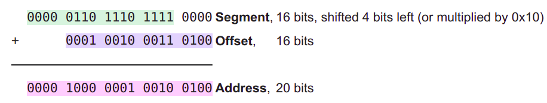
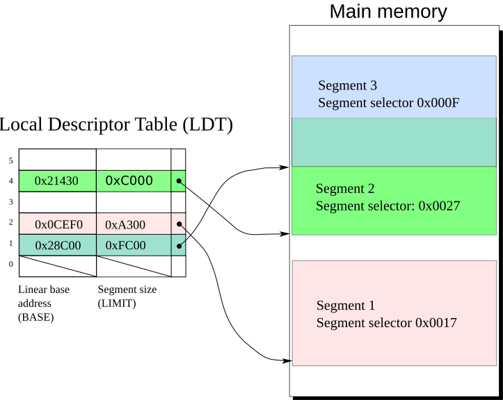

本文转载自：https://www.cnblogs.com/neo-01/p/13858397.html
原标题：《实模式、保护模式和虚拟模式是X86中的概念》
原作者：海之石
在做MIT6.828 Lab1的时候，我一直不理解：为什么会有“实模式”和“保护模式”这几个东西？
实际上，这是Intel CPU为了兼容性而引入的机制。要解释清楚这些东西，要从x86的历史说起。
长话短说
- 实模式下，CPU将段寄存器的值作为偏移量，将逻辑地址转换为物理地址。
- 80286保护模式下，分段机制查询段描述符表，将逻辑地址转换为线性地址。这个线性地址等于物理地址。
- 80386保护模式下，分段机制查询段描述符表，将逻辑地址转换为线性地址。分页单元查询页表，将线性地址转换为物理地址。
“虚拟地址”一般指软件层面使用的地址，即上面的“逻辑地址”。
以下是正文部分。
在x86之前
在微处理器的历史上，第一款微处理器芯片4004是由Intel推出的，那是一个4位的微处理器。在4004之后，intel推出了一款8位处理器8080，它有1个主累加器（寄存器A）和6个次累加器（寄存器B、C、D、E、H和L），几个次累加器可以配对（如组成BC、 DE或HL）用来访问16位的内存地址，也就是说8080可访问到64K内的地址空间。
现代的CPU，地址空间的位数一般比数据总线宽度小很多，比如9代酷睿i5是64位的CPU，但物理地址只有39位。但在上个世纪，对于早期的Intel处理器，情况是相反的。
另外，那时访问内存都是直接使用物理地址。因此程序中的地址必须进行硬编码（给出具体地址），而且也难以重定位。这就不难理解为什么当时的软件大都是些可控性弱、结构简陋，数据处理量小的工控程序了。
分段
x86 memory segmentation - Wikipedia
1979年Intel开发出了16位的处理器8086，标志着Intel X86王朝的开始。这也是内存寻址的第一次飞跃。之所以说这是一次飞跃，是因为8086处理器引入了一个重要机制——分段（Segmentation）。
8086处理器的寻址目标是1M大的内存空间，于是它的地址总线扩展到了20位。但是，一个问题摆在了Intel设计人员面前。虽然地址总线宽度是20位的，但是CPU中“算术逻辑运算单元（ALU）”的宽度，即数据总线却只有16位。也就是，可直接加以运算的指针长度是16位的。
如何填补这个空隙呢？可能的解决方案有多种。例如，可以像一些8位CPU中那样，增设一些20位的指令专用于地址运算和操作，但是那样又会造成CPU内存结构的不均匀。
当时的PDP-11小型机也是16位的，但是其内存管理单元（MMU）可以将16位的地址映射到24位的地址空间。受此启发，Intel设计了一种在当时看来不失为巧妙的方法，即分段的方法。
为了支持分段，Intel在8086 CPU中设置了四个段寄存器（Segment Register）：CS、DS、SS和ES，分别用于可执行代码段、数据段、堆栈段及其他段。每个段寄存器都是16位的，对应于地址总线中的高16位。每条“访内”指令中的内部地址也都是16位的，但是在送上地址总线之前，CPU内部自动地把它与某个段寄存器中的内容相加。因为段寄存器中的内容对应于20位地址总线中的高16位（就是把段寄存器左移4位），所以相加时实际上是内存总线中的高12位与段寄存器中的16位相加，而低4位保留不变。这样就形成一个20位的物理地址，也就实现了从16位虚拟地址到20位物理地址的转换，或者叫“映射”。

段式内存管理带来了显而易见的优势，程序的地址不再需要硬编码了，调试错误也更容易定位了，更可贵的是支持更大的内存地址。程序员开始获得了自由。
保护模式
why 80286 segment is 64k - Google 搜索
技术的发展不会就此止步。随着内存容量的增大，1MB也渐渐无法满足要求了。
Intel的80286处理器于1982年问世了。它的地址总线位数增加到了24位，因此可以访问到16M的内存空间。更重要的是从此开始引进了一个全新理念——保护模式（Protected Mode）。这种模式下内存段的访问受到了限制。访问内存时不能直接从段寄存器中获得段的起始地址了，而需要经过额外转换和检查。
为了和过去兼容，80286内存寻址可以有两种方式，一种是先进的保护模式，另一种是老式的8086方式，被称为实模式（Real Mode）。系统启动时处理器处于实模式，只能访问1M空间。如果需要访问完整的16M空间，可以切换到保护模式。
但是，要想从保护模式返回到实模式，你只有重新启动机器。还有一个致命的缺陷是，80286虽然扩大了访问空间，但它仍然是个16位处理器。这限制了每个段最大为64KB。
一个段是64KB，那么四个段寄存器合起来就是256KB。如果要访问更大的空间，就要切换段寄存器的值。这个切换比较耗时。
因此这个先天低能儿注定寿命不会很久，很快就被天资卓越的兄弟——80386代替了。
进入32位的时代
386 additions to protected mode - Protected mode - Wikipedia
时间来到1985年。80386（也叫i386）是一个32位的CPU，也就是它的ALU数据总线是32位的。同时它的地址总线与数据总线宽度一致，也是32位。因此，其寻址能力达到4GB。同时，80386的保护模式中增加了很多特性，比如在分段之后增加了分页（Paging）。
从理论上说，当数据总线与地址总线宽度一致时，其CPU结构应该简洁明了。但是，80386无法做到这一点。作为X86产品系列的一员，80386必须维持那些段寄存器的存在，还必须支持实模式，同时又要能支持保护模式。
在32位总线的条件下，分段机制得以增强，段的最大长度增加到32位。
这一下真正解放了软件工程师，他们不必再费尽心思去压缩程序规模，软件功能也因此迅速提升。
从8086的16位到80386的32位处理器，这看起来是处理器位数的变化，但实质上是处理器体系结构的变化。从80386以后，Intel的CPU经历了80486、Pentium、PentiumII、PentiumIII等型号。虽然它们在速度上提高了好几个数量级，功能上也有不少改进，但基本上属于同一种系统结构的改进与加强，而无本质的变化。所以我们把80386以后的处理器统称为IA32（Intel Architecture, 32-bit）。
再后来呢？
直到今天，x64的机器虽然使用64位的保护模式，但刚启动的时候还是以实模式运行。所以x86的向下兼容性很强。
不过，随着分页机制的引入以及64位处理器的发展，分段机制渐渐被现代OS抛弃。各个段寄存器要么废弃不用，要么被用于别的用途。
混乱的称呼
上面说到，80386后来被更名为i386。此处的“i386”指的是处理器型号。
但是，IA-32有时候也被称为i386。此处的“i386”指的是一个指令集。举个例子，你在Ubuntu 16.04的下载页面里会看到ubuntu-16.04.6-desktop-i386.iso这个版本。
补充：实模式与保护模式分段机制的区别
实模式下的分段机制非常简陋，就是个算术运算，把虚拟地址加个偏移量就是物理地址。80286引入了保护模式，其分段机制有所变化。
操作系统课上学过，分页会有页表。类似地，分段也有“段表”，用来保存每个段的基本信息。每个段的基本信息包括段的名称、大小、基址等，称为段描述符（Segment Descriptor）。这些描述符组一个“段表”，放在内存中。
实模式的段寄存器保存的是段基址，而保护模式的段寄存器指向“段表”中的某个项。

此外，保护模式下，段描述符中包含该段的属性，比如是否可写、是否可执行等。而在实模式下，是没有这些权限检查的。